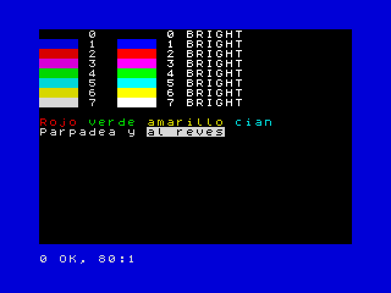

8. Los colores y la pantalla
En este capítulo aprenderás a usar los colores de la máquina con INK,
PAPER, BORDER y BRIGHT, a hacer que un texto parpadee, a escribir en
cualquier sitio de la pantalla con PRINT AT y TAB, y a pasar al modo de
alta resolución con MODE.
Los colores
ZX-V tiene los colores del ZX Spectrum. Son ocho, numerados del 0 al 7, y cada uno tiene una versión más brillante:
| Número | Color | Número | Color |
|---|---|---|---|
| 0 | negro | 4 | verde |
| 1 | azul | 5 | cian |
| 2 | rojo | 6 | amarillo |
| 3 | magenta | 7 | blanco |
Son los colores de siempre. Con PALETTE, cada
número puede ser el color que quieras; lo verás en la referencia.
Cada carácter de la pantalla tiene dos colores: la tinta (el color de la letra) y el papel (el fondo que hay detrás). Alrededor de la pantalla hay un marco, el borde.
INK nelige el color de lo que escribes y dibujas.PAPER nelige el color del fondo.BORDER npinta el marco en el momento.CLSborra la pantalla y la llena del color del papel.BRIGHT 1hace los colores más brillantes (BRIGHT 0los devuelve a la normalidad).
10 BORDER 1: PAPER 0: INK 7: CLS
20 FOR c=0 TO 7
30 PRINT PAPER c;" ";PAPER 0;" ";c;" ";
40 PRINT BRIGHT 1;PAPER c;" ";PAPER 0;" ";c;" BRIGHT"
50 NEXT c
60 PRINT
70 PRINT INK 2;"Rojo ";INK 4;"verde ";INK 6;"amarillo ";INK 5;"cian"
80 PRINT FLASH 1;"Parpadea";FLASH 0;" y ";INVERSE 1;"al reves"

En una línea suelta, INK 2 cambia el color de todo lo que viene después.
Dentro de un PRINT, como en las líneas 30 a 80, solo cambia el color de
ese PRINT: el siguiente vuelve a los colores que tenías.
Dos efectos más:
FLASH 1hace que el texto intercambie la tinta y el papel unas tres veces por segundo.INVERSE 1intercambia la tinta y el papel: el texto sale como un hueco en un bloque de color.
Un truco útil para los mensajes que tienen que destacar:
10 PAPER 7: INK 0: CLS
20 PRINT AT 10,6; PAPER 2; INK 7;" FIN DE LA PARTIDA "
30 PRINT AT 12,6; INK 1;"Puntos: "; INK 2;1250
Si conoces el Spectrum: en ZX-V cada píxel tiene su propio color, así que no hay color clash: dibujar en un color nunca cambia el color de los píxeles de al lado.
Escribir en cualquier sitio: PRINT AT
La pantalla es una cuadrícula de 32 columnas y 24 filas de caracteres. El
programa puede escribir en las 22 de arriba, numeradas del 0 al 21; las dos
de abajo son para INPUT y los mensajes. PRINT AT fila,columna; se va a
ese sitio antes de escribir:
10 PAPER 1: INK 6: CLS
20 PRINT AT 0,0;"Arriba a la izquierda"
30 PRINT AT 10,13;"Centro"
40 PRINT AT 21,14;"Abajo a la derecha"
50 PRINT AT 5,0;"Nombre";TAB 16;"Puntos"
60 PRINT AT 6,0;"Ada";TAB 16;"120"
Las filas bajan desde el 0 de arriba; las columnas van hacia la derecha desde
el 0 de la izquierda. Una fila o columna fuera de la pantalla da
5 Fuera de la pantalla.
TAB n salta a la columna n de la línea en la que estás: viene muy bien
para las tablas.
Con PRINT AT y números al azar puedes llenar de estrellas el cielo de la
noche:
10 BORDER 0: PAPER 0: CLS
20 FOR i=1 TO 300
30 PRINT AT INT (RND*22),INT (RND*32); INK INT (RND*7)+1;"*";
40 NEXT i
Alta resolución: MODE 1
Hasta ahora has usado el modo 0: 256 × 192 píxeles, como el Spectrum. ZX-V tiene un segundo modo con el doble de píxeles a lo ancho y a lo alto: el modo 1, de 512 × 384 píxeles, con 64 columnas y 48 filas de caracteres más pequeños.
10 MODE 1
20 PRINT "El modo 1 tiene 64 columnas y 48 filas de texto."
30 PRINT AT 45,50;"La esquina"
40 PLOT 0,0: DRAW 511,367
MODE borra la pantalla. En el modo 1, el programa puede usar las filas de
la 0 a la 45. La línea 40 dibuja una línea que cruza toda la pantalla
(PLOT y DRAW llegan en el capítulo siguiente). Para volver al modo
normal, teclea MODE 0.
Pruébalo
- Escribe tu nombre en el centro de la pantalla, en amarillo sobre azul, con el borde rojo.
- Dibuja un tablero de ajedrez de 8 × 8 casillas, cada una de dos caracteres de ancho y una fila de alto, alternando el papel negro y el blanco.
Pista
Para el tablero, usa dos bucles FOR, uno para las filas y otro para las
columnas. La casilla de la fila f y la columna c es blanca cuando f+c
es par: INT ((f+c)/2)=(f+c)/2. Escribe dos espacios con PAPER 7 o
PAPER 0 en AT f,c*2.
Una solución para el segundo
10 BORDER 1: PAPER 1: CLS
20 FOR f=0 TO 7
30 FOR c=0 TO 7
40 LET p=7*(INT ((f+c)/2)=(f+c)/2)
50 PRINT AT f+7,c*2+8; PAPER p;" "
60 NEXT c
70 NEXT f
La línea 40 aprovecha que una condición que se cumple vale 1 y una que no, 0,
así que p vale 7 (blanco) o 0 (negro).
Referencia: Colores,
INK, PAPER, BORDER,
BRIGHT, FLASH,
INVERSE, OVER,
PRINT, CLS,
MODE.
Siguiente: 9. Dibujar · Anterior: 7. Procedimientos